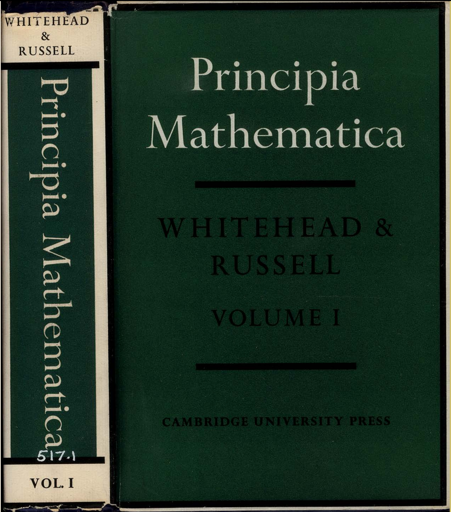
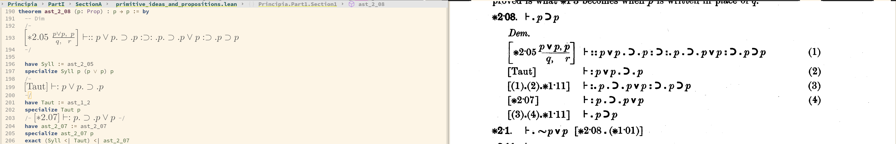
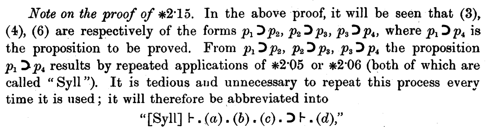
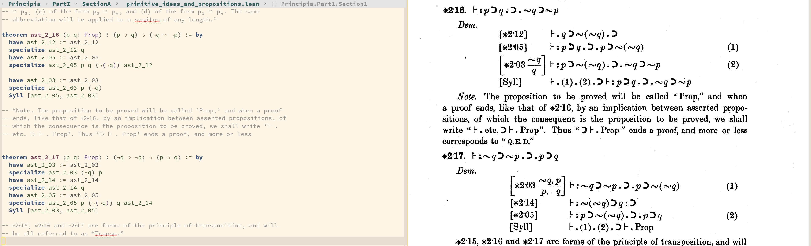
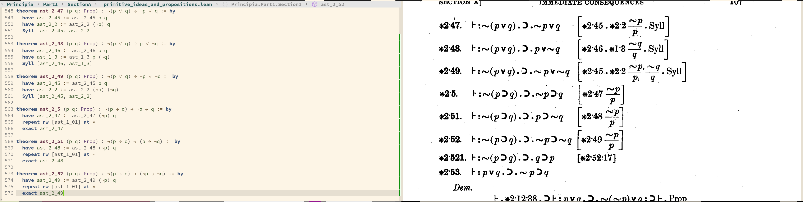
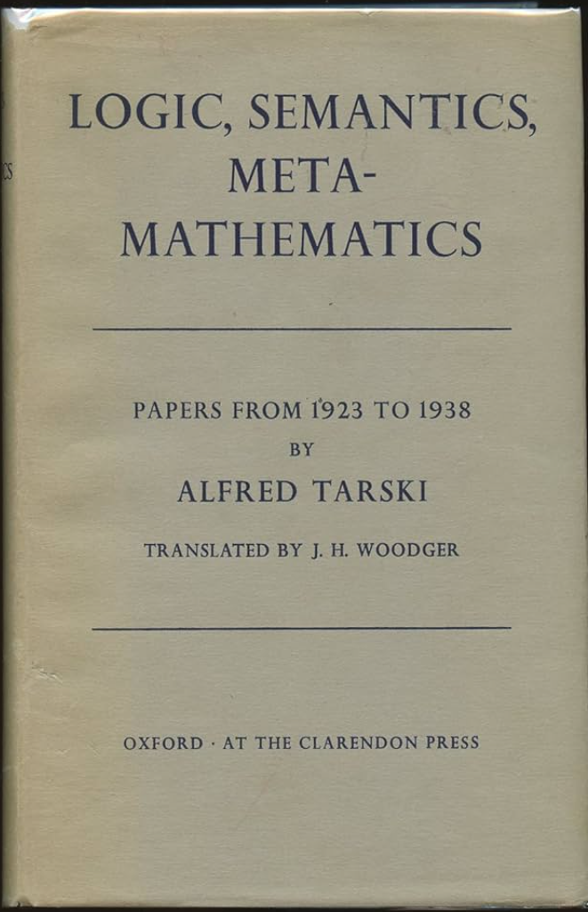

Formalizing Whitehead & Russell's Principia Mathematica Using Lean4
(the HTML export of this file is rendered better than the GitHub's rendering of org files; check https://ndrwnaguib.com/principia)
Table of Contents

This project aims to formalize the first volume of Whitehead & Russell's
Principia Mathematica using the Lean theorem prover. The goal is to ensure that
the formalization aligns clearly with the corresponding theorems in the book to
avoid confusion (See Metaprogramming Syll)
1. Notation
Principia Mathematica's notation (Peano-Russell notation) is exceptionally known for its sophistication that it has a separate entry on the Stanford Encyclopedia of Philosophy (SEP). Also, Prof. Landon Elkind's Squaring the Circles: a Genealogy of Principia’s Dot Notation explains the notation skillfully.
I would like to believe that after reading a few examples of how some formulas were formalized and contrasting them against the Principia's notation should make it clear.
Throughout the formalization, I tried to rigorously follow the proofs, with no or little added statements from my side, which were only necessary for the formalization but not the logical argument. Should you notice any inaccuracy (even if it does not necessarily falsify the proof), please let me know.
Before starting this project, I had already found formalization of the the Principia using Coq, which is much more mature work than this one. However, I still thought it would be fun to do it using Lean4 (See Remarks).
2. Editing
I have included a \(\LaTeX\) fragment with each theorem. If you use Emacs, I
recommend enabling org-preview-latex in the Lean buffer. If you are using
VSCode, perhaps a similar experience can be achieved by installing the Better
Comments extension. This is how it looked like for me:

3. Notes on the formalization
3.1. \(\ast 1 \cdot 11\)
In the Principia, *1.11 is repeatedly used to indicate the inference of a proposition
from another, for example \([(3).(8).\ast 1\cdot 11]\) is the proposition deduced by chaining
proposition (8) and (3). In Lean, this could be analogous to several tactics or
atoms, e.g., <|, simp, etc.
3.2. Metaprogramming Syll
The experience I planned for when reading the formalization is to have the
corresponding text in the Principia included in the same file, only with the
original proofs replaced with their Lean formalization. For example, here is
*2.16 along with a unique part in the formalization, that is metaprogramming a
new tactic to follow the notation for Syll:

Figure 1: The Syll abbreviation defined in *B
open Lean Meta Elab Tactic Term structure ImpProof where (ant cons : Expr) (proof : Expr) deriving Inhabited theorem compose {p q r : Prop} (a : p → q) (b : q → r) : p → r := b ∘ a /-- Compose two implication proofs using the `compose` theorem. -/ def ImpProof.compose (a : ImpProof) (b : ImpProof) : MetaM ImpProof := do unless ← isDefEq a.cons b.ant do throwError "\ Consequent{indentD a.cons}\n\ is not definitionally equal to antecedent{indentD b.ant}" let proof := mkApp5 (.const ``compose []) a.ant a.cons b.cons a.proof b.proof return { ant := a.ant, cons := b.cons, proof := proof } /-- Create the proof of `p -> p` using the `id` function. -/ def ImpProof.rfl (p : Expr) : ImpProof := { ant := p, cons := p, proof := .app (.const ``id [.zero]) p} syntax "Syll" (ppSpace "[" term,* "]")? : tactic elab_rules : tactic | `(tactic| Syll $[[$[$terms?],*]]?) => withMainContext do -- Elaborate all the supplied hypotheses, or use the entire local context if not provided. let hyps ← match terms? with | none => getLocalHyps | some terms => terms.mapM fun term => Tactic.elabTerm term none liftMetaTactic1 fun goal => do let goalType ← goal.getType -- A list of implications extracted from `hyps`. let mut chain : Array ImpProof := #[] let getImplication? (e : Expr) : MetaM (Option (Expr × Expr)) := do -- There may be metadata and metavariables, so do some unfolding if necessary: let ty ← instantiateMVars (← whnfR e) -- Check if it is a non-dependent forall: if ty.isArrow then return (ty.bindingDomain!, ty.bindingBody!) else return none for hyp in hyps do match ← getImplication? (← inferType hyp) with | some (p, q) => chain := chain.push {ant := p, cons := q, proof := hyp} | none => logInfo m!"Expression {hyp} is not of the form `p → q`" let some (p, q) ← getImplication? goalType | throwError "Goal type is not of the form `p → q`" if chain.isEmpty then throwError "Local context has no implications" unless ← isExprDefEq chain[0]!.ant p do throwError "The first hypothesis does not match the goal's antecedent" unless ← isExprDefEq chain[chain.size - 1]!.cons q do throwError "The last hypothesis does not match the goal's consequent" let comp ← chain.foldlM (init := ImpProof.rfl p) (fun pf1 pf2 => pf1.compose pf2) -- It's good to do one last check that the proof has the correct type before assignment. unless ← isDefEq (← inferType comp.proof) goalType do throwError "Invalid proof of goal" goal.assign comp.proof return none
Consequently, I could write the following:

Figure 2: Illustration of the Syll tactic on proving \(\ast 2\cdot 16\) and \(\ast 2\cdot 17\)
One could have got away with one that accepts only two hypotheses.
4. Remarks
I do not see a particular use for this project except for learning the thought-process of building mathematics from scratch. It was an enriching experience for me to read as well as to formalize-especially after observing how the latter, more complicated results, are obtained using simpler ones I personally formalized.


Perhaps a following project would be formalizing Alfred Tarski's “Logic, Semantics, and Metamathematics.”